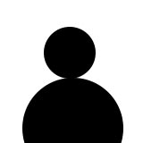

<div ng-controller="headerCtrl">
   <header class="main-header">
    <!-- Logo -->
    <a ui-sref="home" class="logo">
      <!-- mini logo for sidebar mini 50x50 pixels -->
      <span class="logo-mini"></span>
      <!-- logo for regular state and mobile devices -->
      <span class="logo-lg"><b>GT</b>SOFTPREP</span>
    </a>
    <!-- Header Navbar -->
    <nav class="navbar navbar-static-top" role="navigation">
      <!-- Sidebar toggle button-->
      <a  ui-sref="#" class="sidebar-toggle" data-toggle="push-menu" role="button">
        <span class="sr-only">Toggle navigation</span>
      </a>
      <!-- Navbar Right Menu -->
      <div class="navbar-custom-menu">
        <ul class="nav navbar-nav">
          <!-- Messages: style can be found in dropdown.less-->
          
          
          <!-- Tasks Menu -->
          <li class="dropdown tasks-menu">
            <!-- Menu Toggle Button -->
            <!-- <a  ui-sref="#" class="dropdown-toggle" data-toggle="dropdown">
              <i class="fa fa-flag-o"></i>
              <span class="label label-danger">9</span>
            </a> -->
            <ul class="dropdown-menu">
              <!-- <li class="header">You have 9 tasks</li> -->
              <li>
                <!-- Inner menu: contains the tasks -->
                <ul class="menu">
                  <li><!-- Task item -->
                  <a  ui-sref="#">
                    <!-- Task title and progress text -->
                    <!-- <h3>
                    Design some buttons
                    <small class="pull-right">20%</small>
                    </h3> -->
                    <!-- The progress bar -->
                    <div class="progress xs">
                      <!-- Change the css width attribute to simulate progress -->
                      <div class="progress-bar progress-bar-aqua" style="width: 20%" role="progressbar"
                        aria-valuenow="20" aria-valuemin="0" aria-valuemax="100">
                        <span class="sr-only">20% Complete</span>
                      </div>
                    </div>
                  </a>
                </li>
                <!-- end task item -->
              </ul>
            </li>
            <li class="footer">
              <a  ui-sref="#">View all tasks</a>
            </li>
          </ul>
        </li>
        <!-- User Account Menu -->
        <li class="dropdown user user-menu">
          <!-- Menu Toggle Button -->
          <a  ui-sref="#" class="dropdown-toggle" data-toggle="dropdown">
            <!-- The user image in the navbar-->
            
            <!-- hidden-xs hides the username on small devices so only the image appears. -->
            <span class="hidden-xs">{{fullname}}</span>
          </a>
          <ul class="dropdown-menu">
            <!-- The user image in the menu -->
            <li class="user-header">
              
              <p>
               
                <small>{{email}}</small>
              </p>
            </li>
            
            <!-- Menu Footer-->
            <li class="user-footer">
              <div class="pull-left">
                <a  ui-sref="profile" class="btn btn-warning btn-flat">Profile</a>
              </div>
              <div class="pull-right">
                <a  ui-sref="logout" class="btn btn-danger btn-flat btn-md" style="background: #dd4b39;color: white;">
                     Logout 
                </a>
              </div>
            </li>
          </ul>
        </li>
        <!-- Control Sidebar Toggle Button -->
        <li>
          <!-- <a  ui-sref="#" data-toggle="control-sidebar"><i class="fa fa-gears"></i></a> -->
        </li>
      </ul>
    </div>
  </nav>


</div>
<style>
         .logoSize {
            width: 65px;
            margin-left: 20px;
        }
         
</style>
